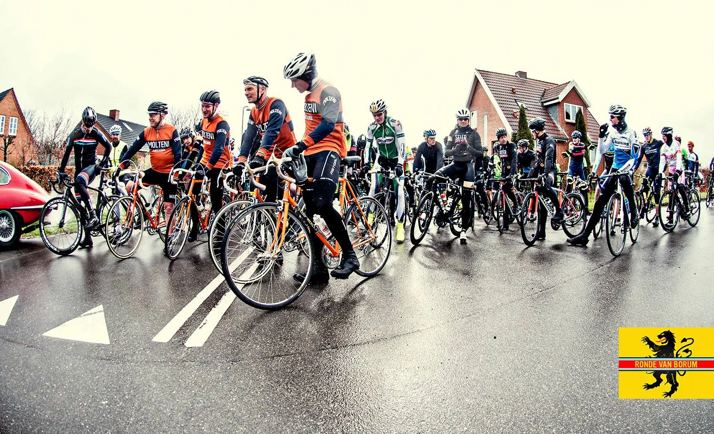
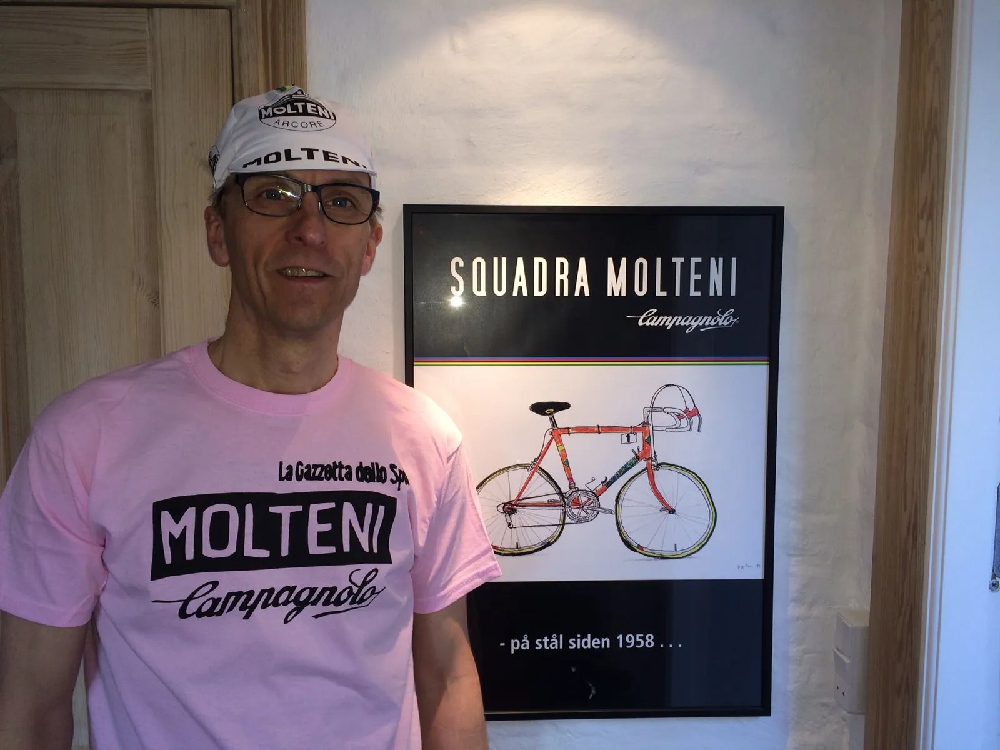
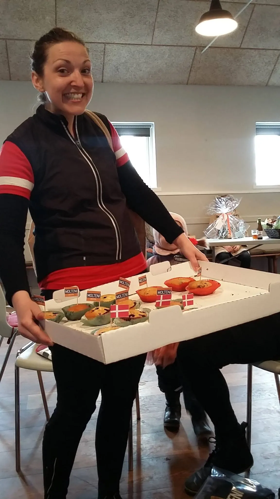

Ronde Van Borum 2016: Belgiske øl, fritter og punkteringer

Det er en blygrå himmel, der hænger lavt over Skivholme Forsamlingshus. Det’ koldt, Det blæser, det små-regner, Det’ Ronde Van Borum 2016.
I dag åbnede Squadra Molteni deres sæson med den danske ardenner-klassiker Ronde van Borum 2016. Et omgangsløb på 10 kuperede omgange af 7,4 km – i dagens anledning krydret med hård vind og regn.

Squadra Moltenis syv mand stod klar sammen med ca. 170 andre forårskåde cykelryttere, og ventede blot på, at Alt om Cyklings Don Uggi Kaldan hoppede ind i den lækre Jaguar Classic – der kørte som masterbil – og skød Ronde van Borum 2016 i gang. Efter en masteromgang, der allerede krævede de første 3 punkteringer, blev løbet givet frit.
Bjergrytter Eigil Leegaard
Squadra Moltenis taktik var som altid, at der skulle stikkes fra start. Men ingen af rytterne nåede helt frem i feltet, for de stærkeste 10 ryttere var allerede væk.
Squadra Moltenis bjergrytter, Eigil Leegard, viste at både ruten, vinden, regnen og den kuperede rute lige var noget for ham. Eigil hægtede sig på 2. gruppe – og der blev han. Eigil er kommet stærkt ud af vinteren, og er i en forrygende form. Han kom i mål som nummer 49 – og klart bedste rytter på stål.
Eigil modtog naturligvis den lyserøde t-shirt efter løbet. Et bevis på, at han er den førende Moltenirytter i denne sæson.

Brødrene Sørensen
Brødene Sørensen kørte som altid stærkt. I dag hægtede de sig fast i 3. – 4. gruppe. Kasper havde i dagens anledning meget høj oktan i blodet. Og selv om han på sin opvarmningstur fra Århus til Skivholme var ved at køre i grøften flere gange, så formåede han at køre et rigtig fighter-løb. Det lykkedes ham at vinde den ærefulde skiltespurt på den første frie omgang.
Steffan var bom-stærk – og kørte med stort overskud både på bakkerne og i vinden. Steffan og Kasper kom i mål som henholdsvis nummer 64 og 65.
Niels Bjørnsteen lå sammen med Kasper og Steffan. Men efter 8 omgange havde han ikke mere at køre med. Der var udsolgt. Heldigvis havde han lige fart nok til at komme op over målbakken – så han kunne trille pit.
I pitten sod Grane Maaløe. Grane var godt kørende, men en punktering godt halvvejs i løbet tvang ham ud. Grane fik flået ringen af, fik sat en ny på, kørte videre – og punkterede igen…
Jens Langergaard kom stort set direkte fra de nordfranske pavéer, hvor han i sidste uge kørte Paris-Roubaix. Jens lå sammen med sin navnebror Jens Auer fra Team Peugeot Re-Cycled, der i dag kørte som “legionnaire” for Squadra Molteni. Jens og Jens kørte et stærkt løb – og med ubestridt bedste og sejeste stil og korte rør. Sådan! Jens og Jens blev nr. 91 og 92.
Molteni-øl og kage efter Ronde Van Borum 2016
Efter målgang var det tid til at smage på Eigil Leegaards specialbryggede Molteni-øl. Smagen ER PRAGTFULD. Både Tour Ale og Belgian Lager. Fantastiske øl.
Eigil kan meget mere end køre stærkt og brygge fantastisk øl. Eigil er også bagmanden bag en ny Squadra Molteni-plakat. Han overakte dette første tryk til Niels Bjørnsteen. En flot, enkel og æstetisk plakat med den sødeste tegning af Jeppe Thiemer som hovedmotiv. Dén plakat kommer vi til at se meget mere til…

Og hvem kom så lige ind i forsamlingshuset med en kasse Molteni-muffins? Det gjorde “la bella Maria”. Maria Winther havde selvfølgelig lige kørt Ronde van Borum-løbet først – og kom i mål på en 4. plads. Vi niver os i armen. Jo, den er god nok. Hun er virkelig. Squadra Molteni elsker Maria.


Uggi Kaldan og hjælperne omkring Altomcykling.dk’s Ronde van Borum 2016 præsterede igen i år at stable et klasse arrangement på benene. Der var tænkt på alt. Lige fra “forsamlingshusmor”, der i pendulfart løb med frisk kaffe og sandwich, til de små lækre detaljer: nyfejede sving og rygnumrene som var flot designede klistermærker.